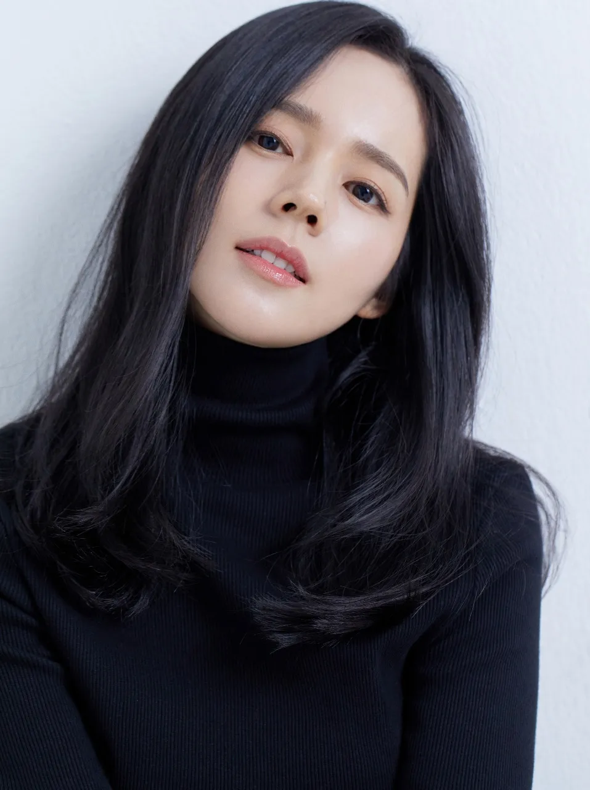

|  | |
| 본명 | 김현주 (金賢珠, Kim Hyunjoo) |
| 출생 | 1982년 2월 25일[입학유예] (41세) |
| 주소 | 서울특별시 은평구 구산동 |
| 신체 | 166cm, AB형 |
| 가족 | 부모님, 언니 |
| 배우자 | 연정훈(2005년 4월 26일 결혼 - 현재) |
| 종교 | 무종교 |
| 데뷔 | 2002년 CF 아시아나항공 |
| 연도 | 방송사 | 제목 | 역할 | 비고 |
|---|---|---|---|---|
| 2002 | KBS2 | 햇빛 사냥 | 주영 | 16부작 |
| 2003 | KBS1 | 노란 손수건 | 조선주 | 169부작 |
| 2004 | KBS2 | 애정의 조건 | 강은파 | 60부작 |
| 2005 | MBC | 신입사원 | 이미옥 | 20부작 |
| 2006 | MBC | 닥터 깽 | 김유나 | 16부작 |
| 2007 | SBS | 마녀유희 | 마유희 | 16부작 |
| 2010 | SBS | 나쁜 남자 | 문재인 | 17부작 |
| 2012 | MBC | 해를 품은 달 | 허연우 | 20부작 |
| 2018 | OCN | 미스트리스 | 장세연 | 12부작 |
| 연도 | 제목 | 역할 |
|---|---|---|
| 2004 | 말죽거리 잔혹사 | 강은주 |
| 2012 | 건축학개론 | 양서연 |